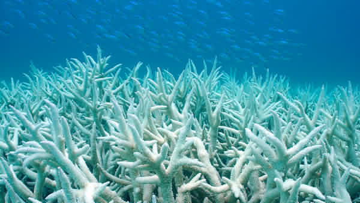
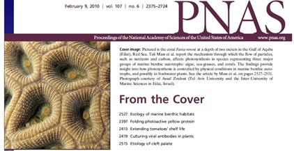
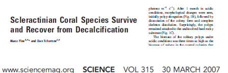
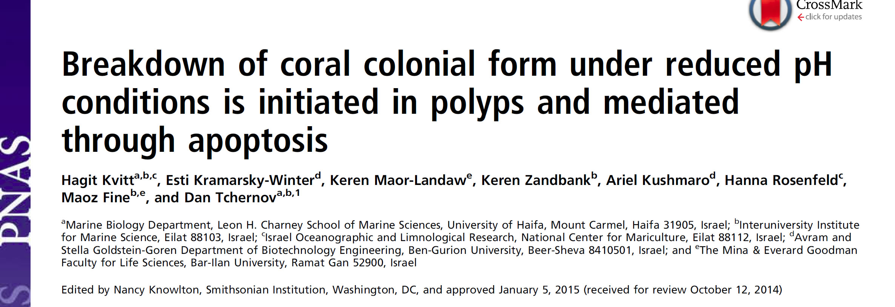
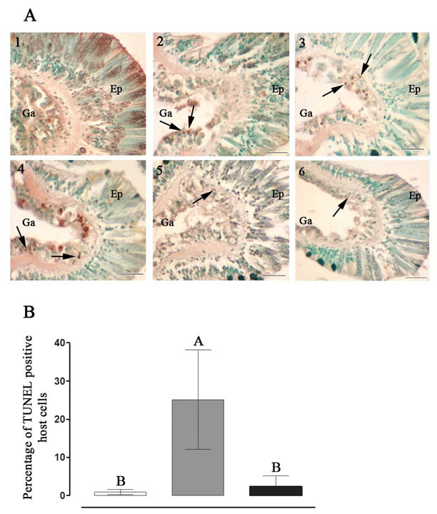
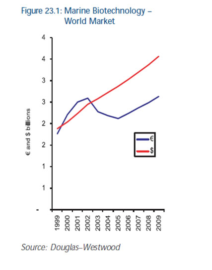
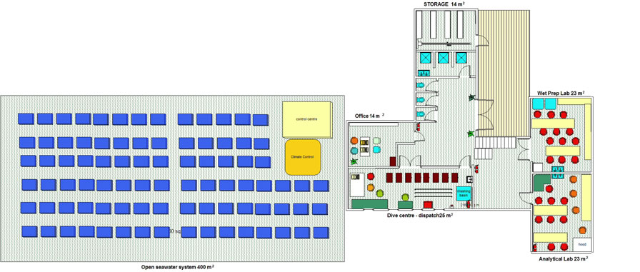
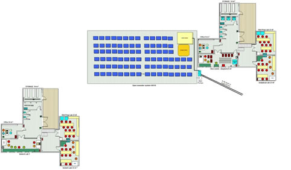
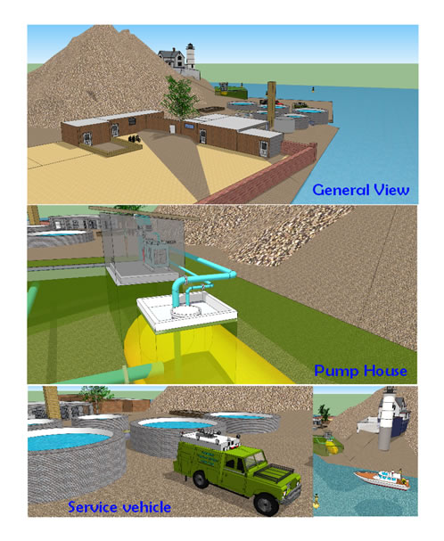
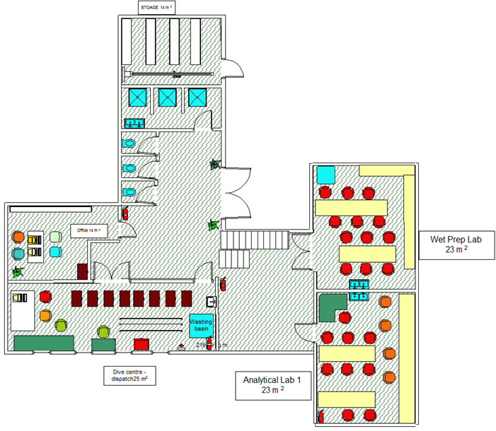

The Deep Med Research Group (Established 2009)
Marine Biology in the Eastern Mediterranean
Head of the DEEPMED: Dr.Dan Tchernov
Lab manager: Dr. Eli Shemesh
DONATE to a study or a student scholarship
Your generous support will help fund projects like:
We urgently need a solid baseline for both biodiversity and oceanographic parameters to establish a modern marine research profile for Israel.
How: A Long Term Monitoring Program As in all monitoring programs biodiversity monitoring is based on several key elements:
• Document and understand seasonal and interannual variability of key marine species (how is a key species defined?)
• Relate variations in human activity with community fluctuations of key species
• Determine the need and methods for monitoring the biodiversity
• Determine the mechanisms and rates of key species shifts omissions and substitutions
• Measure the time-varying fluctuations within the community structure
We Need: $350,000 yearly for funding the running cost of the program (salaries, boat time, trimix gases water analysis and consumables).
Marine conservation under climate change and human impact:
Coral reefs disappear do to “bleaching” we research the mechanism that leads to this devastating effect:

Coral bleaching is a growing concern world wide. Coral bleaching is induced by positive anomalous temperatures in surface waters of
1.5 to 2 ºC. However, not all reefs or corals within a reef are equally susceptible to elevated temperature stress (ETS).
We found that there are specific reasons for the death of the corals and published it in high profile scientific journals:



This is what we find inside a coral that experiences high sea surface temperatures :

We need $300,000 for research funds to continue and understand this phenomenon, and perhaps help to mitigate the effects of global change on coral reefs
The long-term potential of the sector is very large, arguably greater than conventional (non-marine) biotechnology activity which in 2002 generated $35.8 billion of revenues. Annual average growth 2005–2009 is estimated at 3.8%, with a total growth rate of 24% over the forecast period.
“One of the most exciting emerging technology sectors”
the US Sea Grant has reported that with small investments five drugs have been developed “with market potential of $2bn p.a.”

The UK Foresight Report also stated: “Marine biotechnology is unlike other areas of biotechnology in that it is defined in terms of its source material, rather than the
market it serves. It is anticipated that it will eventually contribute to nearly every industry sector, from healthcare to bioremediation and from cosmetics to
nutraceuticals. The time to invest in the underpinning science, knowledge networks, and public understanding of this major biotechnology field has now arrived”

The main experiment area in the complex with running sea water, and controlled conditions of temperature pH and salinity

The complete complex, top view
We request $1,000,000 for this project
One of the most devastating and publically tangible effects of climate change and human impact such as pollution (light, noise and chemical aspects) is a sharp decline in biodiversity (a sterling example is coral reefs steady diminishing rate (Hogh-Goldberg 2007 Science). Although this effect is so clearly visible to most biologist as it is to professionals such as fisherman, we have a poor grasp on the big picture of marine biodiversity change in the Mediterranean, in most critical locations such as the eastern basin.ths is mainly due to the lack of proper quantification methodology, data validation and unified interchangeable methodology between different stations let alone countries. The direct consequence of the latter is a hesitant and in many cases not scientifically valid claims that are made by our community in face of society that can be debated. This is in many cases a most damaging process that enhances resistance among stakeholders to conservation oriented ideas that are also in many cases economically unfavorable in the short term.
We believe that two major steps should be implemented quickly:
The inclusion of as many marine stations as possible from the eastern/southern basin into an all Mediterranean network such as SOMLIT or SOCIB.
As many stations as possible should adapt a unified biodiversity monitoring program with proper quantification techniques data validation and
unified interchangeable methodology between different stations.
This will enable us to at least create a valid baseline for the future. It goes without saying that lacking the oceanographic data there is very little to gain from this endeavor and that is why the two components should go hand in hand.
We have to give the stakeholders a clear and true picture of the main and most visible consequence of the sum of both our actions in the environment as well as possible naturally occurring processes.
Illustration of the future station:

Based on The SOMLIT network and principals we have established an initial pool
Of marine stations including the Somlit cluster that is led by the Banyuls station, Crete (HCMR), Itali (Napoli), Spain (balearic islands, Palma station), and possibly Tunisia.
Through regular, coordinated monitoring on an international level, the specific objectives are:
1. to standardize data acquisition for a suite of parameters (hydro-climatic, chemical and biological and ecological data) shared by all sites and to provide these data to the whole [scientific] community;
2. to facilitate the comparative study of long-term time series on a pan Mediterranean basis (identification of fluctuations shared by the different sites and environmental responses of coastal systems to global climate and anthropogenic forcing and to distinguish between these two sources of variability);
3. to define a ‘normal’ situation for each site and to determine the typical patterns of seasonal and inter-annual fluctuations;
4. to establish a spatial and temporal framework for research on the causes behind the observed variability.
Supported by: Observatory for the Development of the Mediterranean, GID (Inter-academic Group for Development)
UFM - Union for the Mediterranean – in progress (financing the networking)
Horizon 2020 – forming a team (meeting planned in March 2013 Bayuls)
stage 2: the labs

We need $700,000 for the complition of the system
Student scholarships help to minimize the burdens of living and tuition costs while students are completing research towards degrees. While tuition fees in Israel are reasonable, and most of the IUI’s students have scholastic records that make them eligible for scholarships, the later age of matriculation in Israel due to compulsory army service means that students often have spouses and children to support, making higher education costs more burdensome.
We require a $8,000,000 endowment for the scholarships (will reword 18 scholarships per year ).